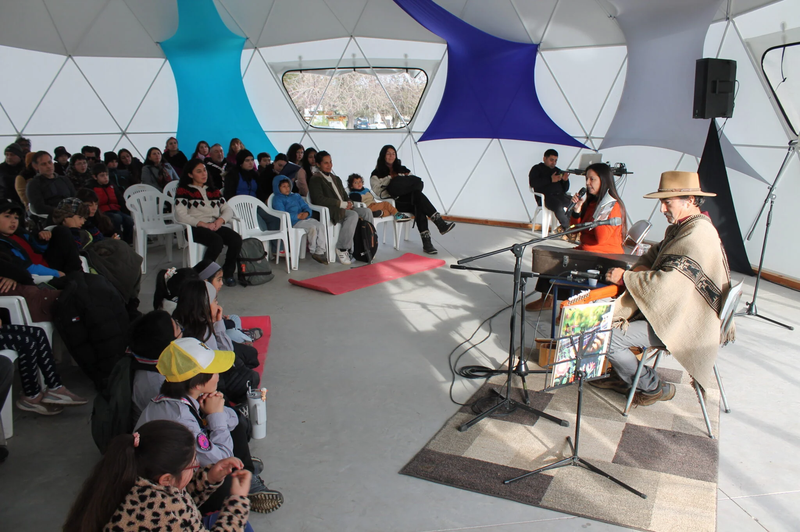
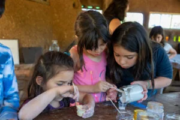
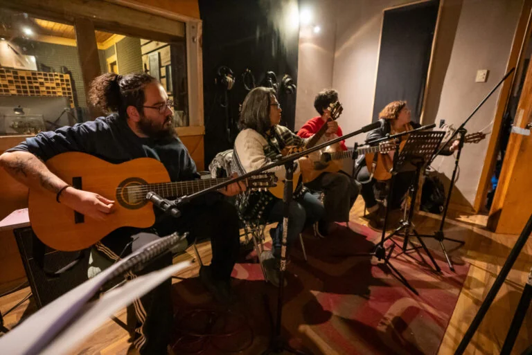
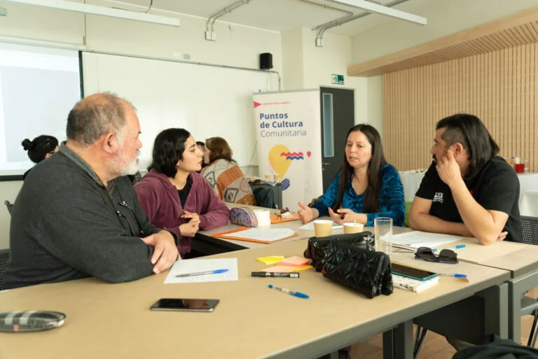

Imagen pendiente de recuperación
Encuentro Regional Puntos de Cultura Comunitaria en Taguatagua
El pasado sábado 19 de Julio se realizó el «Segundo Encuentro Regional de Puntos de Cultura Comunitaria de O’Higgins” en…
27/07/2025El pasado sábado 19 de Julio se realizó el «Segundo Encuentro Regional de Puntos de Cultura Comunitaria de O’Higgins” en…
27/07/2025En el Espacio Cultural La Merced de Rancagua se realizó el lanzamiento oficial del 1° Festival de Canto por Travesura,…
25/07/2025Durante el fin de semana recién pasado celebramos el fin de las vacaciones de invierno en el Domo Cultural Añañuca…
14/07/2025
Agradecemos a quienes pudieron ser parte el pasado sábado 21 de junio del concierto interactivo y exposición de ilustraciones del…
24/06/2025El hito vivido el día sábado 31, refrenda el compromiso de los PCC de OHiggins por fortalecer el trabajo en…
02/06/2025
El arte tiene el poder de transformar realidades, fomentar la autoestima, fortalecer la identidad y generar lazos comunitarios. Desde esta…
20/03/2025
Presentar a los nuevos Puntos de Cultura Comunitaria validados recientemente y continuar con los avances de los dos proyectos de…
07/01/2025
El Centro Cultural para las Comunicaciones Aukan extiende invitación a la presentación de la cantata “Décimas por la Memoria”, en…
09/09/2024
El pasado día sábado 31 de agosto, en dependencias de la Universidad de O’Higgins, se llevó a cabo la segunda…
02/09/2024De la mano de la compañía local de Artes Escénicas Teatro Impronta, en alianza con el equipo del Centro Cultural…
20/08/2024